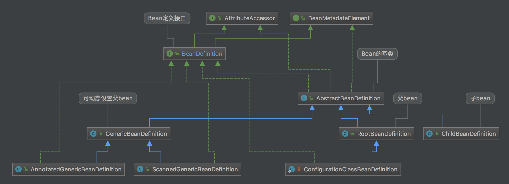

在ioc容器中c抽象了业务上Bean的定义以及维护bean之间依赖关系的接口。
beanDefinition抽象了业务对象在容器中内在表象，抽象其以下行为特性：
- 包限定的类名：一个bean的唯一名称。
- bean行为配置：bean在容器中的行为方式（范围，生命周期回调等）。
- 依赖其他bean：引用bean执行中所需的其他bean。这些引用也称为协作者或依赖项。
- 要在新创建的对象中设置的其他配置设置 - 例如，池的大小限制或在管理连接池的Bean中使用的连接数。
依赖实质上是业务功能对数据或者方法的依赖而beanDefinition只是将业务对象之间的依赖转换成容器中beanDefinition与beanDefinition依赖
BeanDefinition到Bean的形成是通过定义以下元数据将一个业务对象转换成IOC容器的bean：
| Property | |
|---|---|
| set/get_ParentName | 设置bean的父bean形成继承关系 |
| set/get_BeanClassName | 设置bean的class名称 |
| set/get_Scope | 生命周期 |
| LazyInit | 设置bean在容器启动时候是否加载（默认bean的创建发生在获取过程） |
| set/get_AutowireCandidate | 只是针对-依据类型匹配时候自动注入到其他bean中 |
| set/get_FactoryBeanName | bean是否指定由该工厂bean以及创建方法来创建对象 |
| ConstructorArgumentValues | 实例对象的构造函数-参数值 |
| PropertyValues | 返回要应用于bean的新实例的属性值MutablePropertyValues |
| isSingleton | |
| isAbstract |
AttributeAccessor（设置数据依赖）
BeanDefinition接口定义了bean在容器中的基本元数据，BeanDefinition到bean形成是一个创建对象与访问属性的过程，AttributeAccessor接口定义属性访问，与BeanDefinition信息形成了一个完整的有数据和行为的bean
public interface BeanDefinition extends AttributeAccessor, BeanMetadataElement {
...
}
定义bean方式
定义一个bean有多种方式通过文件的配置或者注解@Bean，但本质上是用于创建一个或多个对象，IOC容器在收到获取该bean时并使用由该bean定义封装的配置元数据来创建（或获取）实际对象，在创建过程中依据配置元数据创建多个BeanDefinition的实例来完成继承，依赖或者其他等。
如：通过xml文件定义一个bean
<bean id="beeDataSource" class="com.alibaba.druid.pool.DruidDataSource" destroy-method="close">
<property name="url" value="${db.url}"/>
</bean>
@Service
@Scope("prototype")
public class AbxImpl {
@Resource
protected A a;
@Resource
protected B b;
}
BeanDefinition 记录bean定义数据 property 由AttributeAccessor记录
Bean的继承定义
在xml配置文件中都是同一个类，但是代表了不同的bean在其容器内部是通过RootBeanDefinition,ChildBeanDefinition和GenericBeanDefinition对象来封装这些元数据的。
<!--通过默认构造函数创建一个bean-->
<bean id="clientServiceBean" class="com.ClientService"/>
<!--通过静态方法创建-->
<bean id="clientServiceInstanceBean" class="com.ClientService"
factory-method="createInstance" />
<!--通过实例工厂方法创建-->
<bean id="serviceLocator" class="com.DefaultClientService" />
<bean id="clientService"
factory-bean="serviceLocator"
factory-method="createClientServiceInstance"/>
如：容器用来描述其配置元数据的继承关系是由RootBeanDefinition和ChildBeanDefinition实例完成的
如下：在解析资源时候BeanDefinitionParserDelegate会创建不同的实例来表示继承关系
DefaultListableBeanFactory bf = new DefaultListableBeanFactory();
RootBeanDefinition rbd = new RootBeanDefinition(BeanA.class);
//向容器注册一个beanA的bean
bf.registerBeanDefinition("beanA", rbd);
ChildBeanDefinition c = new ChildBeanDefinition("BeanB.class") ;
//设置父bean
c.setParentName("beanA");
bf.registerBeanDefinition("beanB", c);
BeanDefinition实例采用- 模版设计模式 如AbstractBeanDefinition实现了其公共部分，抽象了可变行为cloneBeanDefinition方法，该方法是用于科隆自己的
模板模式是通过把不变行为搬移到超类， 去除子类中的重复代码或者重写其父类方法来体现它的优势
cloneBeanDefinition在ChildBeanDefinition中的实现如下：
public class ChildBeanDefinition extends AbstractBeanDefinition {
@Override
public AbstractBeanDefinition cloneBeanDefinition() {
return new ChildBeanDefinition(this);
}
}
继承结构图：

在计算机世界里，所有的功能都是建立在通过数据对现实进行抽象的基础上的。